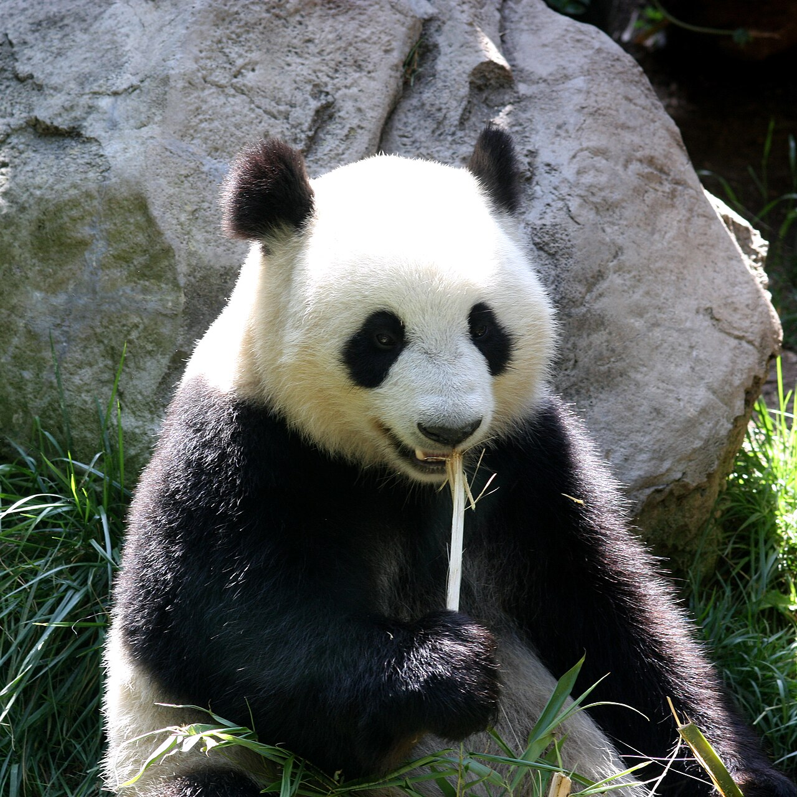

生物多样性及其保护
本期导读
三个层次 · 三种价值 · 就地保护

视频原话 · 导读3 句
- 同学们好！这节课梳理人教版选择性必修二第四章第二节——生物多样性及其保护。8.4s
- 高考常考生物多样性价值类型的判断、生物多样性丧失的原因，以及就地保护和易地保护的区别。9.2s
- 我们按六个考点梳理，每个考点都讲清楚怎么考、怎么做。5.5s
三个层次01#
所有生物 + 它们拥有的全部基因 + 各种各样的生态系统 = 生物多样性
遗传多样性
同种生物不同个体之间基因不同
例：水稻的许多品种
物种多样性
地球上生物种类的多样
例：大熊猫、金丝猴
生态系统多样性
各种生态系统的多样
例：森林、草原、湿地、海洋
解题方法
同种内部不同 → 遗传；不同物种 → 物种；不同环境类型 → 生态系统
视频原话5 句
- 考点一，生物多样性的三个层次。生物圈内所有的植物、动物和微生物等，它们所拥有的全部基因以及各种各样的生态系统，共同构成了生物多样性。13.9s
- 遗传多样性，也叫基因多样性：同种生物的不同个体之间基因不同，比如水稻有许多品种。8.9s
- 物种多样性：地球上生物种类的多样，比如我国特有的大熊猫、金丝猴。6.9s
- 生态系统多样性：森林、草原、湿地、海洋等各种生态系统的多样。7.1s
- 考法：判断属于哪个层次。解题方法：同种内部不同，是遗传多样性；不同物种，是物种多样性；不同环境类型，是生态系统多样性。13.5s
三种价值02#
直接价值
食用、药用、工业原料；
旅游观赏、科学研究、文学艺术创作
旅游观赏、科学研究、文学艺术创作
间接价值
对生态系统起重要调节作用（生态功能）：保持水土、蓄洪防旱、调节气候
潜在价值
目前人类尚不太清楚的价值
易错
间接价值明显大于直接价值
视频原话5 句
- 考点二，生物多样性的价值有三种。3.9s
- 直接价值：对人类有食用、药用和作为工业原料等实用意义的，以及有旅游观赏、科学研究和文学艺术创作等非实用意义的。11.7s
- 间接价值：对生态系统起到重要调节作用的价值，也叫生态功能。比如保持水土、蓄洪防旱、调节气候、净化水质。11.7s
- 潜在价值：目前人类尚不太清楚的价值。4.2s
- 易错：生物多样性的间接价值明显大于它的直接价值。5.5s
价值类型的判断03#
| 实例 | 价值类型 |
|---|---|
| 芦苇造纸；青蒿素治疗疟疾 | 直接价值 |
| 到湿地旅游观赏；创作诗歌 | 直接价值 |
| 模仿蝙蝠回声定位发明雷达（科学研究） | 直接价值 |
| 湿地蓄洪防旱；森林保持水土 | 间接价值 |
| 植物光合作用制造氧气、调节气候 | 间接价值 |
解题方法
问一句“是否对生态系统起调节作用”：是 → 间接；对人类有直接用途（含科研、观赏、艺术）→ 直接；未知 → 潜在
视频原话4 句
- 考点三，价值类型的判断，这是高考最爱考的。4.7s
- 芦苇可以造纸、青蒿素治疟疾、到湿地旅游、根据蝙蝠回声定位发明雷达，都是直接价值。8.7s
- 湿地蓄洪防旱、森林保持水土、植物光合作用制造氧气，都是间接价值。7.4s
- 解题方法：问一句“是不是对生态系统起调节作用”？是，就是间接价值；对人类有直接用途，包括科研和观赏、文学艺术创作，是直接价值；还不知道的，是潜在价值。16.4s
多样性丧失的原因04#
① 栖息地的丧失和碎片化（最主要）
② 掠夺式利用：乱捕滥杀、过度采伐
③ 环境污染；农林品种单一化
④ 外来物种盲目引入（水葫芦、福寿螺）
易错
外来物种入侵不是最主要原因；引入外来物种不一定增加当地生物多样性，往往使其降低
视频原话5 句
- 考点四，生物多样性丧失的原因。3.6s
- 栖息地的丧失和碎片化，这是最主要的原因。比如道路把一片森林分割成若干小块，大型动物的种群被隔开。10.6s
- 对野生物种的掠夺式利用，比如乱捕滥杀、过度采伐。5.2s
- 还有环境污染、农业和林业品种的单一化，以及外来物种的盲目引入，比如水葫芦、福寿螺的入侵。9.0s
- 易错：外来物种入侵不是最主要的原因；而且引入外来物种不一定增加当地的生物多样性，往往会使其降低。10.2s
保护措施05#
就地保护
原地建立自然保护区、国家公园
最有效
最有效
易地保护
迁出原地：
植物园、动物园、繁育中心
植物园、动物园、繁育中心
生物技术保护
精子库、种子库、基因库；人工授精、组织培养、胚胎移植
考法
就地 vs 易地：看有没有迁出原地；此外还要加强立法、执法和宣传教育
视频原话5 句
- 考点五，保护生物多样性的措施。3.6s
- 就地保护：在原地对被保护的生态系统或物种建立自然保护区以及国家公园等，这是对生物多样性最有效的保护。10.6s
- 易地保护：把待保护物种从原地迁出，在异地进行专门保护，比如建立植物园、动物园、濒危动植物繁育中心。10.8s
- 还可以利用生物技术保护，比如建立精子库、种子库、基因库，利用人工授精、组织培养和胚胎移植等技术。10.3s
- 考法：区分就地和易地，看有没有迁出原地。另外，加强立法、执法和宣传教育也是重要措施。10.1s
协调人与环境06#
反对
盲目地、掠夺式地开发利用大自然
提倡
合理利用就是最好的保护：生态旅游、适度捕捞采伐
考法
保护和利用并不矛盾：在保护的前提下合理开发利用，实现可持续发展
视频原话4 句
- 考点六，协调人与生态环境的关系。3.7s
- 保护生物多样性，只是反对盲目地、掠夺式地开发利用大自然，并不意味着禁止开发和利用。8.9s
- 合理利用就是最好的保护。比如在保护区周边发展生态旅游，适度、有计划地捕捞和采伐。9.2s
- 考法：问保护与利用的关系。答：保护和利用并不矛盾，要在保护的前提下合理开发利用，实现可持续发展。10.8s
易错速查✓
先自己判断，再点按钮查看对错与解析。
- 1生物多样性包括遗传、物种、生态系统多样性说法正确。
- 2湿地蓄洪防旱体现了直接价值说法错误：体现了间接价值
- 3生物多样性的间接价值明显大于直接价值说法正确。
- 4外来物种入侵是生物多样性丧失的最主要原因说法错误：最主要是栖息地丧失和碎片化
- 5建立自然保护区是最有效的保护措施说法正确。
- 6保护生物多样性就是禁止开发利用说法错误：合理利用就是最好的保护
间接价值大于直接，就地保护最有效！
视频原话 · 易错速查5 句
- 最后，用六道判断题检验一下。3.6s
- 判断一：生物多样性包括遗传、物种、生态系统多样性？对。判断二：湿地蓄洪防旱体现了直接价值？错，是间接价值。13.6s
- 判断三：间接价值明显大于直接价值？对。判断四：外来物种入侵是最主要原因？错，最主要是栖息地丧失和碎片化。13.1s
- 判断五：建立自然保护区是最有效的保护措施？对。判断六：保护生物多样性就是禁止开发利用？错，合理利用就是最好的保护。13.4s
- 六个考点串成一条线：间接价值大于直接，就地保护最有效。我们下期再见！7.9s
图片来源
图片来源：Wikimedia Commons —— Kevin Dooley《Giant panda eating bamboo》CC BY 2.0
Photo: Kevin Dooley, CC BY 2.0